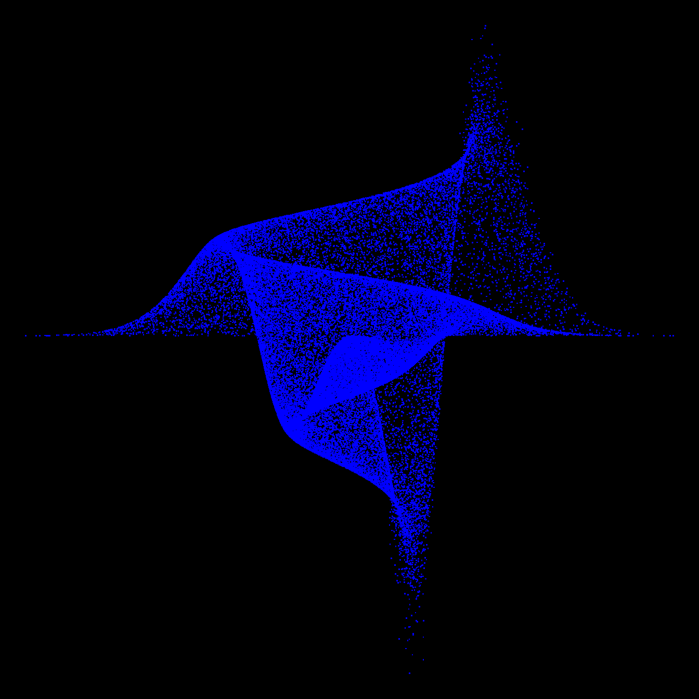

Related chart types

Ggplot2

Animation

Interactivity

3D

Caveats

Data art
A graph by Matt Asher showing probability function in a data art fashion.
This graph comes from the probability and statistics blog of Matt Asher Thanks for this contribution !

Related chart types